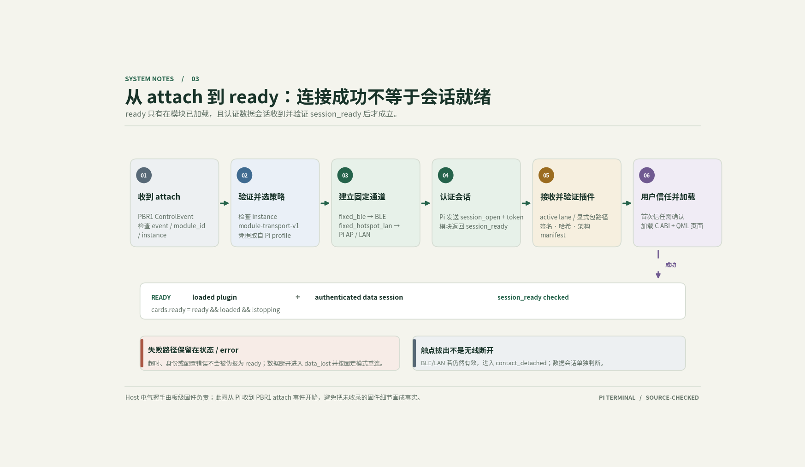
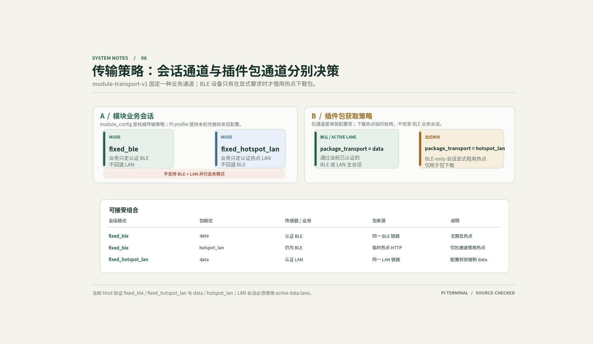

插接之后，发生了什么？
用一张可操作的等距工作台，拆解模块从发现到可用的过程。观察插接模块、控制桥、无线业务链路与终端屏幕如何联动；也可以拔出触点、模拟数据丢失，再走一遍恢复与卸载。
交互演示 / 不连接真实设备 / 不访问设备配置阅读方式与源码边界
每个状态对应 SessionStateMachine.cpp 的合法边。attached 是 Pi 收到控制桥事件后的起点，不模拟未收录 Host 固件的电气唤醒时序。步进中的 verifying_package 对应数据链路接收路径；显式热点下载时验证在包工具内部完成，不额外假造一个宿主 verifying_package 状态。
触点拔出而数据通道仍活跃时，contact_detached 保持插件；无线数据丢失进入 data_lost。只要实例尚未停止，已加载插件可在重新认证后回到 ready 或 contact_detached。未完成安装的演示恢复到包接收阶段。error 的显式 retry 回到 connecting（此演示错误发生在认证之前）。
BLE-only 与热点 LAN-only 二选一，不演示跨模式自动回退。只有 BLE-only 会话允许显式租用热点接收包，业务仍走 BLE。用户确认后进入 loading_plugin；ready 还要求插件和认证数据会话均已就绪。
页面没有任何设备、网络性能或传感器测量；不展示伪造“实时”读数。模块移动只表达触点是否插接，不按模型尺寸或真实机械行程重建。造型采用 Anatomy iso-kit 生成，许可证见 SVG 内注释与页尾说明。


Illustration geometry generated using Anatomy iso-kit（MIT © 2026 Ryan）。页面没有 CDN、后台服务、遥测或设备控制；沿用项目静态 HTTP 预览即可打开。